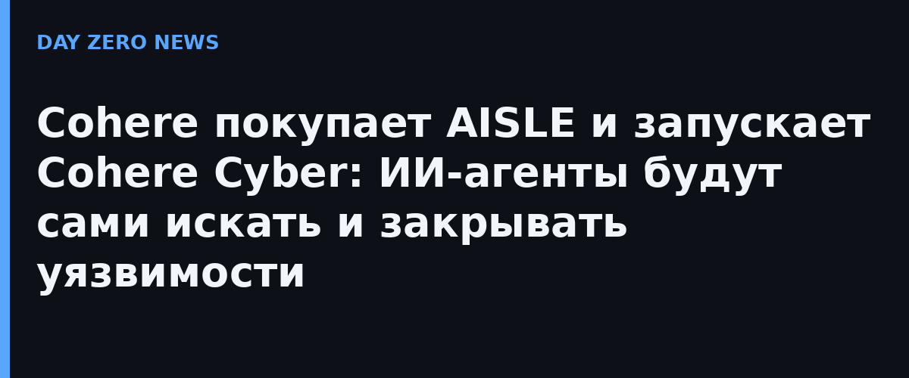

15 октября Cohere сообщила о подписании письма о намерениях (letter of intent) по покупке сан-францисского стартапа AISLE. Тот занимается автономными ИИ-системами, которые сами обнаруживают и помогают устранять ранее неизвестные уязвимости в критическом программном обеспечении. После закрытия сделки команда AISLE войдёт в новое подразделение Cohere Cyber, которое расширит платформу компании в сторону безопасности ИИ-систем для предприятий и госсектора.
В компании рассуждают просто: пока ИИ переходит из экспериментов в продакшен, безопасность становится главным фактором внедрения. Объединённые возможности должны усилить обнаружение угроз, лучше контролировать ИИ-агентов и автономные рабочие процессы, а также защитить развертывания в приватном облаке, on-premises и полностью air-gapped средах. Cohere называет это «киберустойчивым суверенным ИИ»: поиск, валидация и исправление уязвимостей должны стать непрерывной и масштабируемой способностью, а не разовой работой пентестеров.
Для Cohere это уже четвёртое поглощение за последнее время — после Reliant AI, Aleph Alpha и теперь AISLE. Компания явно строит европейский форпост: суверенные требования к данным, безопасности и комплаенсу в ЕС — её рыночная ниша, а кибербезопасность добавляет к ней аргумент для правительств и регулируемых отраслей.
Важная деталь: пока это письмо о намерениях, а не закрытая сделка — финансовые условия не раскрываются. Но тренд читается ясно: крупные разработчики моделей начинают покупать безопасность как компетенцию, а не покупать у консалтеров. Автономный поиск уязвимостей — как раз та область, где ИИ-агент уже полезен сегодня: машинного кода больше, чем рук, способных его аудитить.